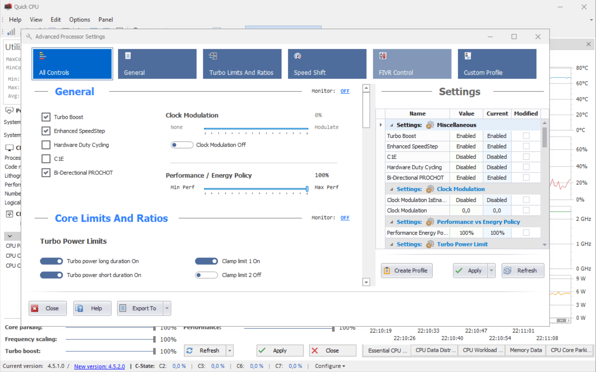
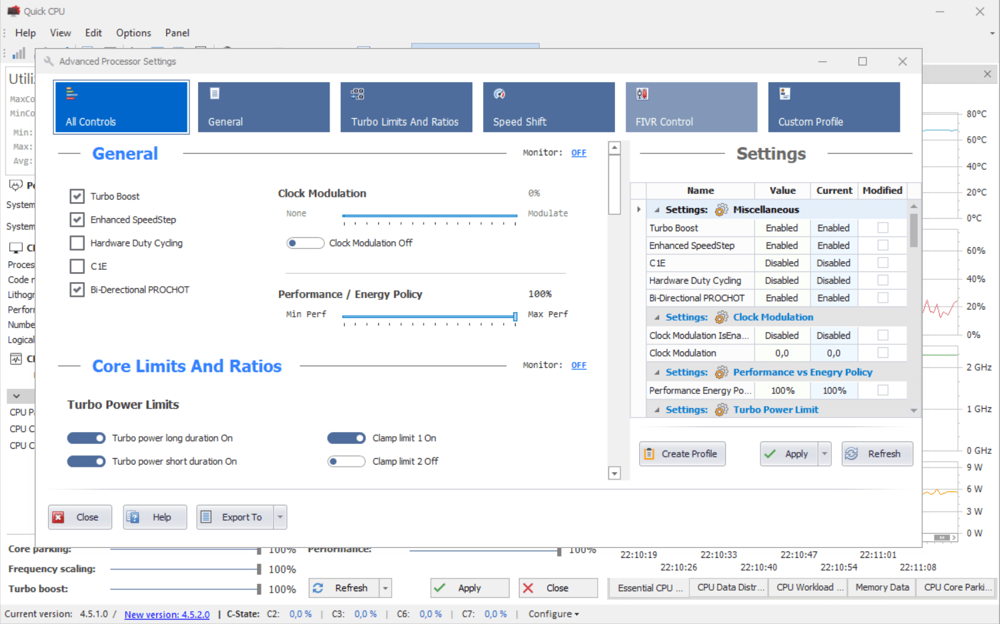
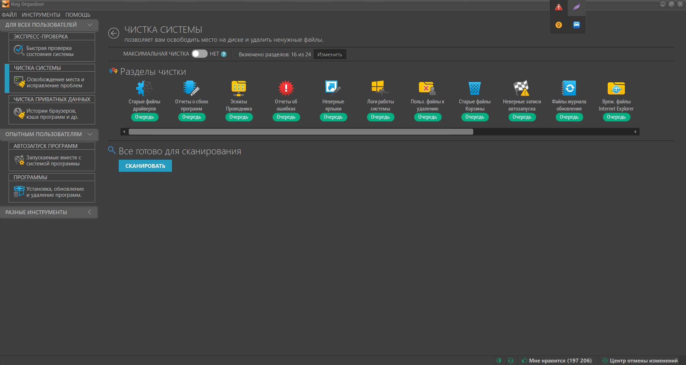
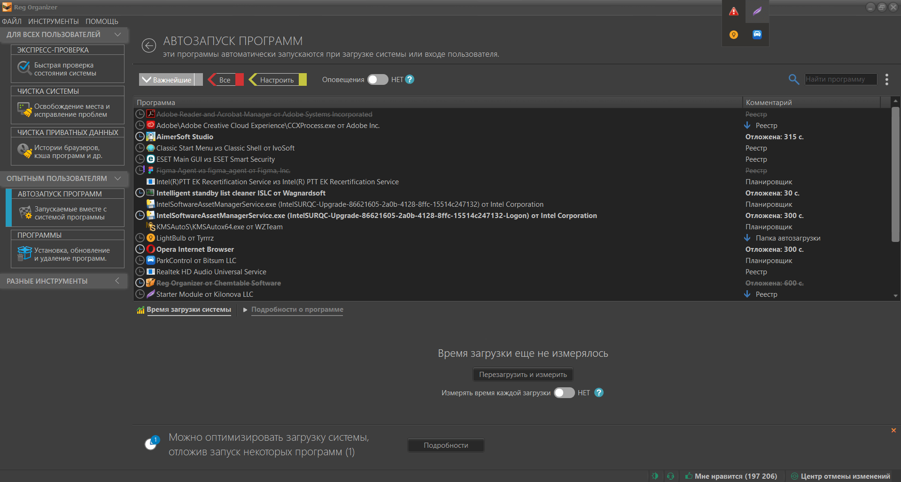
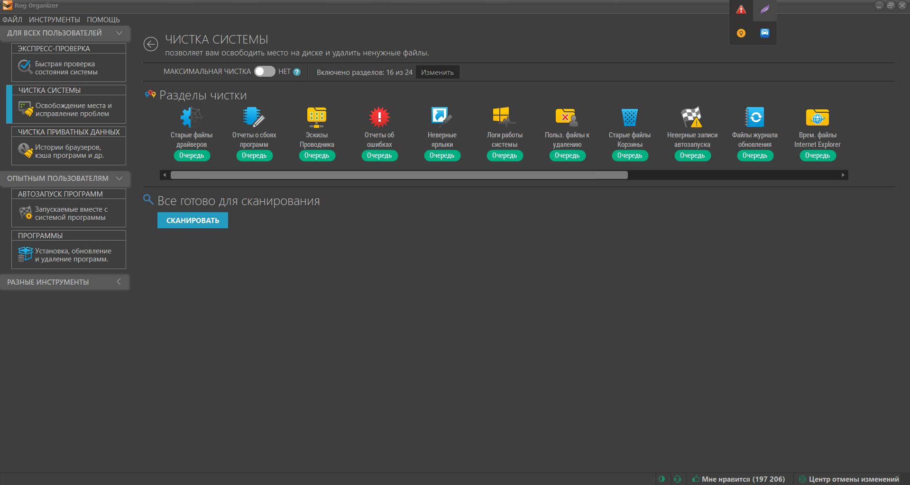
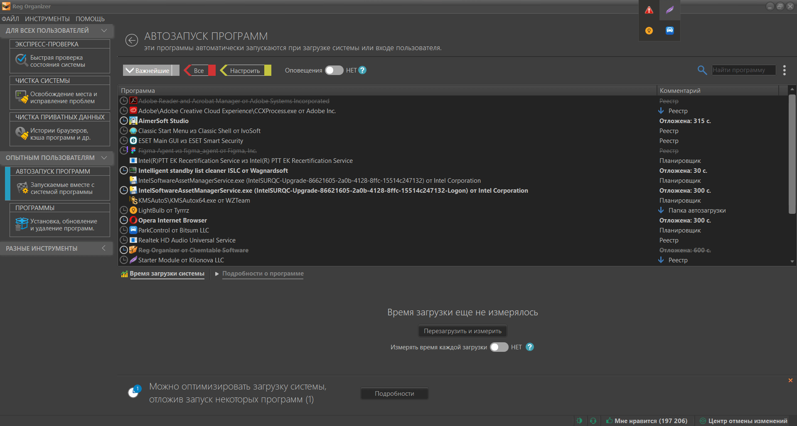

контент
AutoRunsX64 - Утилита для настройки автозапуска
Утилита способна управлять автозагрузкой программ, сервисов, модулей, драйверов и других компонентов системы.
Программа проверяет Автозагрузку, Run, RunOnce и другие секции и ключи реестра. При желании Autoruns можно настроить на мониторинг и других расположений, в том числе модулей Explorer, панелей управления, BHO (Browser Helper Objects), извещений Winlogon, автоматически запускаемых служб, сервисов и многие другие. При помощи Autoruns можно не только контролировать автозапуск приложений, но и отключать автозагрузку любого из них. Для этого достаточно убрать соответствующую галочку. Кроме настройки системы, с помощью Autoruns можно отслеживать вредоносные программы, которые как правило, прописывают свои ключи в раздел Автозагрузки реестра операционной системы.
QuickCPU - Монитор и настройка ЦП
Эта программа позволяет пользователям точно настраивать свои процессоры для повышения производительности и эффективности. С его помощью они могут проверять температуру, тактовую частоту ядра или регулировать частоту по своему вкусу.
Эта программа служит монитором ЦП, что также позволяет пользователям точно настраивать свои процессоры для повышения производительности и эффективности. С его помощью они могут проверять температуру, тактовую частоту ядра или регулировать частоту по своему вкусу.
 

ParkControl - Распарковка ЦП
Утилита способна управлять автозагрузкой программ, сервисов, модулей, драйверов и других компонентов системы.
Утилита позволяет управлять такими параметрами работы центрального процессора: Parking AC и DC – процентное соотношение количества ядер, которые должны оставаться активными (незапаркованными); Freq Scaling AC и DC – минимальная частота в процентном соотношении, с которой должен работать процессор. Программа окажется полезной для увеличения производительности ПК во время запуска некоторых игр, разработчики которых некорректно реализовали парковку ядер (например, Warface или Tera Online). Это косвенно влияет на прирост FPS, позволяя «выжать» максимум даже со слабого компьютера с двухъядерным процессором.
WizTree - Сканирование дисков
Утилита сканирует все файлы на вашем диске.
это полезное приложение, которое сканирует ваш жесткий диск, чтобы узнать, какие файлы занимают больше всего места. Цель этого приложения - найти большие папки и файлы. Однако, что действительно выделяет WizTree, так это то, как оно показывает нам это - оно использует визуальные элементы, похожие на карты, с разными цветами и формами, которые отображают, сколько места занимают файлы на вашем жестком диске.
ProcessHacker - Просмотр процессов и служб
Программа для просмотра процессов и служб, которая дает доступ к огромному количеству подробной информации о запущенном процессе.
Программа позволяет выполнять базовые операции, такие как завершение, приостановление продолжение любого процесса, закрытие связанных с процессом окон или назначение уровня приоритета. Process Hacker предоставляет подробную информацию о всех процессах, так что вы можете анализировать ее и решать остановить ли процесс или оставить его работающим. Вы даже можете связывать клики и процессы, чтобы посмотреть, как процесс будет реагировать. Это удивительно. Если вы желаете узнать немного больше о производительности своего компьютера, Process Hacker хорошо подойдет для этого.
TCP Optimizer - Автоматическое ускорение интернета
Небольшая бесплатная утилита, которая поможет настроить ваше Интернет-соединение🌐
Небольшая бесплатная утилита, которая поможет настроить ваше Интернет-соединение (от модема до кабельного подключения) на максимальное быстродействие. Программа не требует установки, позволяет определить и установить наилучшее значение MaxMTU, а также настроить многие другие параметры.
 Total Commander
Total Commander
Total Commander — Файловый менеджер.
Total Commander — файловый менеджер с закрытым исходным кодом🗂️
Total Commander - это самый мощный и стабильный файловый менеджер для Windows. Приложение продолжает добрую традицию двухпанельных файловых менеджеров, но отличается повышенным удобством и функциональностью, поддерживает плагины, имеет множество встроенных полезных инструментов. Программа обрабатывает архивы и позволяет Вам легко копировать файлы в архив и из него. Включает в себя расширенное копирование, перемещение, переименование, и удаление полных деревьев; поддержку drag-and-drop; утилиту запуска, которая позволяет Вам размещать часто используемые программы в выпадающее меню; FTP-клиент; прямой доступ к Сетевому окружению; история посещаемых директорий и запускаемых файлов, способность разбивать большие файлы на небольшие части и объединять их.
 Reg Organizer
Reg Organizer
RegOrganizer - Очистка, ускорение, оптимизации Windows
ПО, предназначенное для полного удаления программ, настройки автоматически запускаемых приложений, расширенной чистки и оптимизации Windows, управления системным реестром Windows.
Reg Organizer поможет удалить ненужные приложения и их следы, предотвращая захламление реестра и дисков компьютера. Это весьма полезно, потому как далеко не все программы удаляют за собой рабочие файлы и записи с настройками в системном реестре. Поможет контролировать приложения, которые запускаются вместе с операционной системой. Таким образом вы сможете освободить ценные ресурсы для других целей и в ряде случаев ускорить загрузку и работу операционной системы Windows. Позволяет удалять большое количество ненужной информации и освободить место на системном диске. С ее помощью можно удалить ненужные обновления, старые версии Windows и многое другое.
 



Zealdocs - Документация языков программиррования
Оффлайн Документация практически для каждого языка программиррования👨💻
Данная программа должна быть у каждого начинающего программиста и не только, я думаю наверняка у вас была ситуация, когда вы забывали название того или иного тэга, параметра, функции и т.д., в Zealdocs вы сможете найти всю необходимую для вас документацию, почти для любого языка программирования, даже без интернета* (если прежде нужная библиотека была скачана), это намного быстрее и эффективнее чем просто искать нужную информацию в интернете.
Sublime Text - Редактор кода
Редактор кода с продвинутым функционалом и поддержкой множеств языков программирования🤖
Sublime Text - многофункциональный текстовый редактор с широким набором удобных инструментов для выделения, маркировки и обработки текстовых фрагментов кода. Интерфейс этого редактора очень лаконичен. Зато скорость работы и отклика на все Ваши действия на достаточно высоком уровне. Поддерживает огромное количество языков (C++, Dylan, Erlang, HTML, Haskell, Java, JavaScript, Lua, Markdown, MATLAB, Perl, PHP, Python, Ruby, SQL, XML и др.) и предлагает на выбор около 20 цветовых схем. Весьма удобно, что реализован полноэкранный режим - очень полезно, если не хотите, чтобы Вас что-то отвлекало от полноценной работы. Кроме того, для Вас приготовлены так называемые мультипанели: можно параллельно работать с несколькими файлами в одном окне, что намного удобнее, чем использовать несколько отдельных окон. Хочется выделить такую фишку как миникарта - в правой части редактора расположена колонка, в которой в миниатюре расположены примерно 5-6 экранов с текстом. Это позволяет быстро перемещаться по коду и находить нужные элементы.
 ShutUp10++
ShutUp10++
O&O ShutUp10++ - Полный контроль над функциями в Windows
Антишпионский инструмент для Windows 10-11. Утилита предлагает вам самостоятельно решить, какие “удобные” функции Windows 11 и 10 угрожают конфиденциальности и должны быть отключены.
O&O ShutUp10++ позволяет получить полный контроль над теми функциями Windows 10 и Windows 11, которые Вы хотите использовать и убедиться, что ваши данные не будут отправлены третьим лицам. При помощи простого и интуитивного интерфейса пользователь может самостоятельно решить, какие нежелательные функции должны быть отключены для улучшения условий конфиденциальности данных.
BoosterX - Комлпексная оптимизация Windows
Создано специально для повышения производительности. Помогает избавиться от фризов и статтеров. Повышает FPS до 45%. Уменьшает системную задержку до 40%.
Каждый раз при запуске, программа моментально сканирует всю систему, не меняя никаких настроек и не трогая ничего. Исходя из собранных данных, BoosterX анализирует систему на уровень оптимизации. Есть три способа оптимизации системы. Первое – это опросник. Исходя из собранных данных, опросник будет показывать только те настройки, которые требуются для оптимизации. Второй способ оптимизации проводится за пару кликов. Необходимо выбрать один из трех режимов быстрой оптимизации. После чего, система будет полностью оптимизирована.Третий способ – ЭКСПЕРТ МЕНЮ. Это полный контроль над твиками и настройками системы. Программа обновляет и показывает состояние всех настроек в системе, при этом дает управлять всеми настройками.
TaskbarDock - Центрирование значков на панели задач
Одна из множества утилит для быстрого центрирования значков на панели задач Windows.
Одна из множества утилит для быстрого центрирования значков на панели задач Windows. В данный момент программа находится на стадии разработки.
Пак обоев в фентези стиле
Пак обоев. Стиль - игровой/фентези👾
Пак обоев из 10 штук на рабочий стол. Стиль фентези/игровой. Разрешение 1920х1080.
Пак иконок для браузеров
Пак иконок под все браузеры.
Пак минималистичных иконок из 13 штук под все браузеры в нескольких экземплярах.

Пак иконок для программ Adobe
Пак иконок под множество программ Adobe.
Пак иконок из 10 штук под многие программы Adobe.